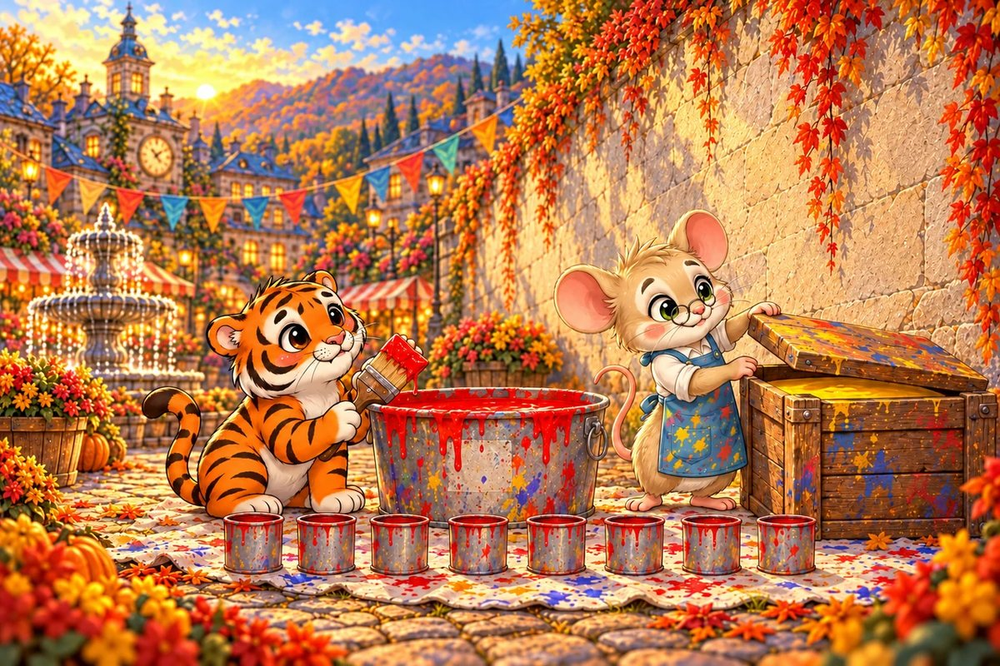
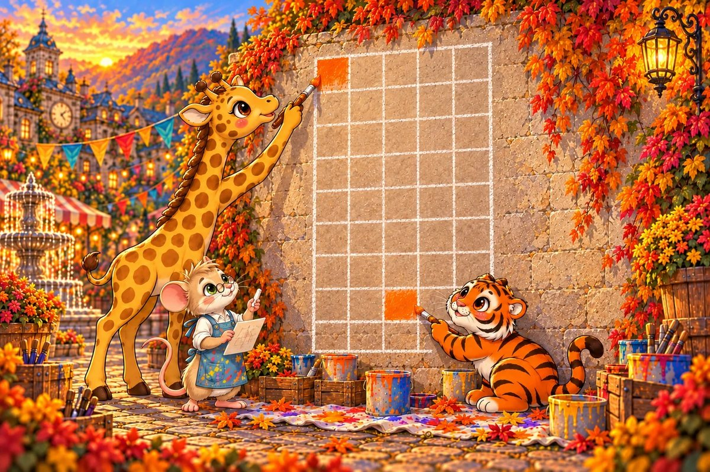
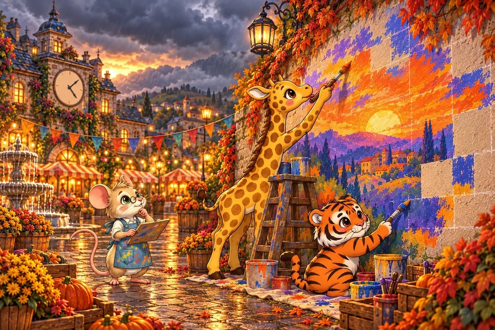

10 printed pages · 2.3 MB · A4 or US Letter. Download PDF · Open PDF to printOpens in a new tab. Use the PDF viewer's Print control. To use less ink, read online and choose only the questions on pages 9-10 in Print.
Page 1 of 7 · A Sketch the Size of a Postcard
The town square has one long blank wall, and the Harvest Festival is in three days. Vincent Van Mouse unrolls his sketch: a sunset over the hills, small enough to fit in his paw. “Every centimetre on my sketch becomes 25 centimetres on the wall,” he explains. Stripe-Scout whistles. Sail-Affe stretches her neck to see the top of the wall.
Try it: The sketch is 8 cm tall. If every 1 cm becomes 25 cm, how tall will the mural be, in centimetres?
33
175
200
225
Show the answer
200. Scaling multiplies every length by the same factor: 8 × 25 = 200 cm. Adding 25 instead (8 + 25 = 33) would squash the picture out of proportion.

Page 2 of 7 · Sunset Orange
Vincent’s sunset orange is always mixed from red and yellow in the ratio 2:3. Stripe-Scout has already poured 8 pots of red into the big mixing tub and is waiting, brush ready, for the yellow.
Try it: Red and yellow are mixed in the ratio 2:3. There are 8 pots of red. How many pots of yellow are needed?
9
12
16
24
Show the answer
12. 2 parts are 8 pots, so 1 part is 4 pots. Yellow is 3 parts: 3 × 4 = 12. Keeping the same difference instead (8 + 1 = 9) would change the colour.
Page 3 of 7 · The Wrong Shade?
On the second morning, Stripe-Scout finds yesterday’s tub. Its label says 10 pots of red to 15 pots of yellow. Her ears flatten. “I mixed it wrong. It’s ruined.” Vincent doesn’t answer straight away. He simplifies the ratio first, the way a careful artist checks a colour before judging it.
Try it: Simplify 10:15 so that the first number is 2. What is the second number?
3
5
7
13
Show the answer
3. Divide both parts by 5: 10 ÷ 5 = 2 and 15 ÷ 5 = 3, so 10:15 is 2:3, the very same orange. Taking 8 away from both parts (2:7) does not keep the ratio.

Page 4 of 7 · High Squares and Low Squares
Vincent chalks a grid of 45 squares onto the wall. Sail-Affe can reach the high squares without a ladder, and Stripe-Scout is quickest along the bottom. They agree to split the squares in the ratio 4:5, high to low.
Try it: 45 squares are shared in the ratio 4:5. How many squares does Sail-Affe paint?
9
20
25
36
Show the answer
20. 4 + 5 = 9 parts altogether. 45 ÷ 9 = 5 squares in each part. Sail-Affe paints 4 parts: 4 × 5 = 20.

Page 5 of 7 · Racing the Rain Clouds
On the last afternoon, grey clouds roll over the hills. Seven squares are still bare. Stripe-Scout wants to give up and throw a sheet over the wall, but Vincent checks the clock instead. They have been painting 3 squares every 12 minutes, steady and neat.
Try it: At the same rate, how many minutes will 7 squares take?
16
21
28
84
Show the answer
28. Find the time for one square first: 12 ÷ 3 = 4 minutes. Then 7 × 4 = 28 minutes. Adding 4 more minutes (12 + 4 = 16) treats a proportion as an addition.
Page 6 of 7 · Gold for the Final Touch
They finish with minutes to spare, and the first raindrops miss the wall. One small pot of gold paint is left for the sun’s rays. Vincent shares its 30 ml in the ratio 1:2:3 between himself, Sail-Affe and Stripe-Scout, because Stripe-Scout has the most rays to paint.
Try it: 30 ml is shared in the ratio 1:2:3. How many millilitres does Stripe-Scout get?
3
5
10
15
Show the answer
15. 1 + 2 + 3 = 6 parts. 30 ÷ 6 = 5 ml in each part. Stripe-Scout has 3 parts: 3 × 5 = 15 ml.
Page 7 of 7 · The Unveiling
At the festival, the whole town gathers in front of the wall. The sunset glows exactly like the sketch, only twenty-five times taller. Professor Hooten asks for a postcard of the mural for every reader in the library. Vincent smiles. Scaling works in both directions.
Try it: The mural is 200 cm tall. At a scale of 1 to 25, how tall is the postcard picture, in centimetres?
8
175
225
5000
Show the answer
8. To scale down, divide every length by 25: 200 ÷ 25 = 8 cm. That is exactly the size of Vincent’s first sketch.
The end · Great maths
Seven questions, one story.
Try the story again without peeking, or print it and work the questions on paper. SnackPack Basic Math has the rest of the story shelf, daily practice and number games.